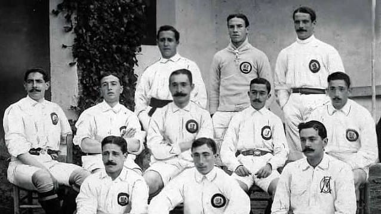
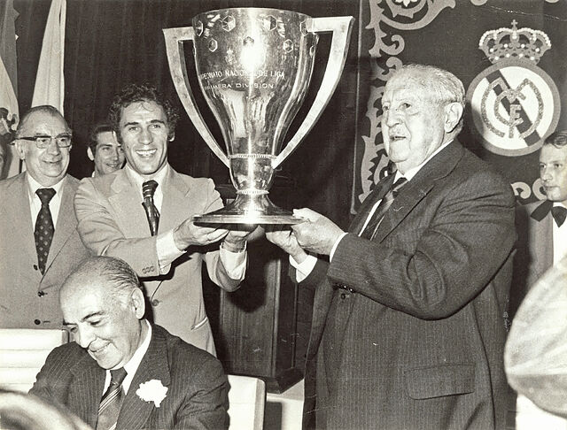
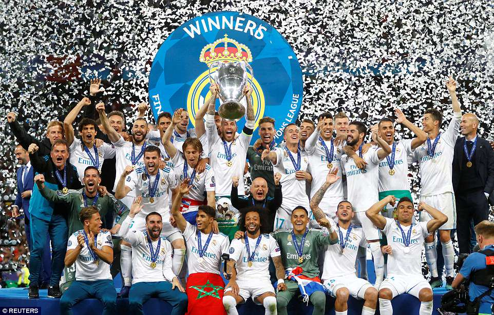
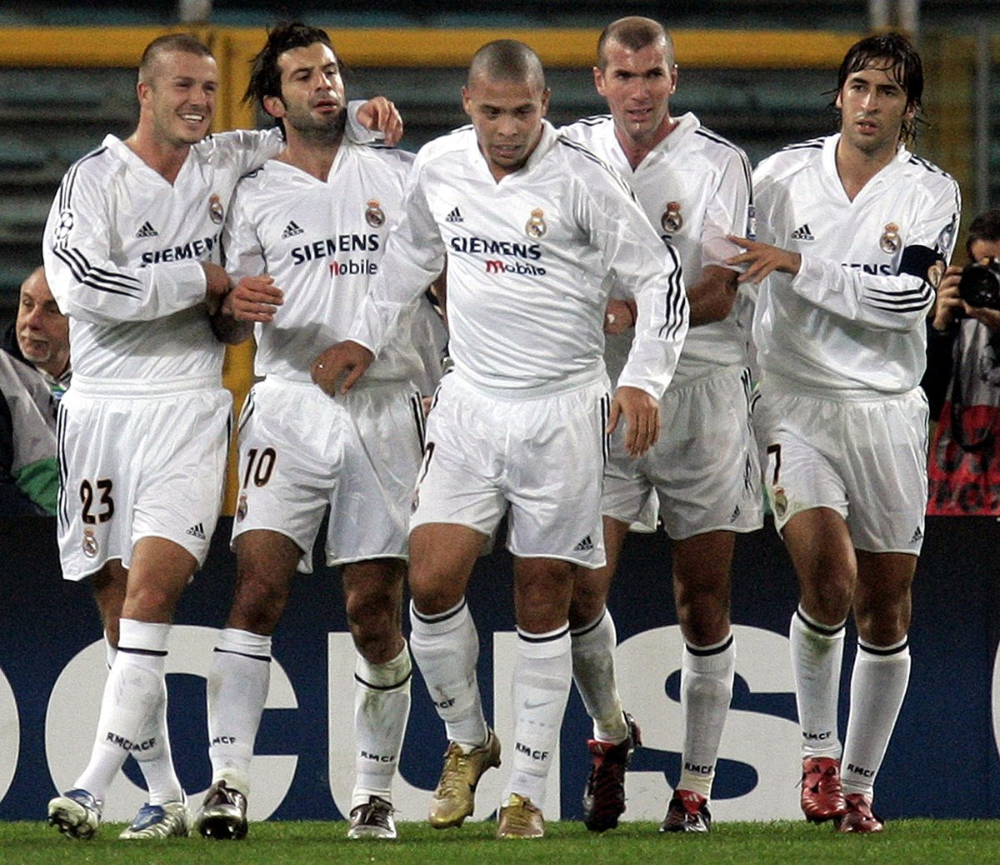

History of Real Madrid
Real Madrid Club de Fútbol, founded on March 6, 1902, in Madrid, Spain, has become a symbol of sporting excellence and a cornerstone of football history. The club’s journey began with a small group of football enthusiasts who sought to create a competitive team, leading to its first official match and the eventual establishment of its first president, Juan Padrós. In 1920, King Alfonso XIII granted the club the title "Real," meaning "Royal," marking the beginning of its illustrious reputation.
Throughout the 20th century, Real Madrid rose to prominence, especially under the presidency of Santiago Bernabéu, who served from 1943 to 1978. Bernabéu's vision transformed the club into a powerhouse, both on and off the pitch. He oversaw the construction of the iconic Santiago Bernabéu Stadium, which opened in 1947 and has since become one of the most famous football venues in the world.
Real Madrid's on-field success is highlighted by its record number of UEFA Champions League titles, having won the tournament 15 times, including five consecutive victories from 1956 to 1960. This era saw the emergence of legendary players such as Alfredo Di Stéfano, Ferenc Puskás, and Francisco Gento, who helped lay the foundation for the club’s dominance in European football.
The club’s fierce rivalry with FC Barcelona, known as "El Clásico," has added to its rich history, with both teams competing for supremacy in Spanish and European football. Real Madrid has also been home to some of the sport's greatest talents, including Raúl, Roberto Carlos, Zinedine Zidane, and more recently, Cristiano Ronaldo, who solidified his status as one of the greatest players of all time during his tenure from 2009 to 2018.

Off the pitch, Real Madrid is not only a football club but also a global brand, boasting millions of fans worldwide. The club's commitment to excellence and its rich history of triumphs continue to inspire future generations, ensuring that Real Madrid remains a pivotal part of football culture and history.